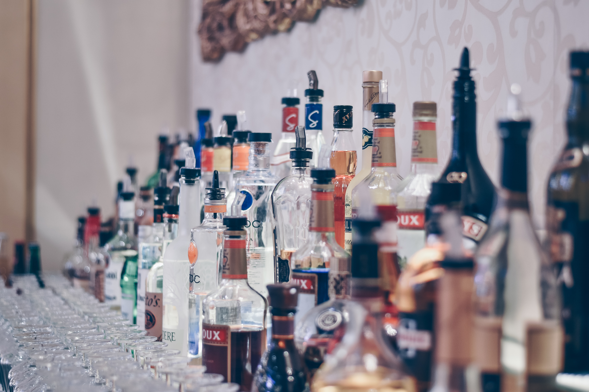

TOP 10 MISCONCEPTIONS ABOUT RUSSIA
The FIFA World Cup that took place in the summer of 2018 made many foreigners
look at Russia with different eyes. Many of them were quite sincerely
convinced that they were going to a land where the military ran everything,
and every respectable family had a tame bear. According to the results of
recent years, guides and other categories of specialists working with tourists
have shared the most popular misconceptions about life and life in Russia. The undoubted
leadership is convinced that our compatriots wash down any food with vodka.
1. vodka

Vodka is generally a sore subject, we no longer know how to deal with it,"
says one of the English-speaking guides, who has been working with foreign
tourists for many years.
Meanwhile, in reality, the Russian society is gradually "sobering up".
The country's chief narcologist, Yevgeny Brun, notes that in 2013 the average
level of alcohol consumption per capita was 13.5 liters, which is 2.1 liters
less than in the previous year. And in 2010, according to international studies,
the number of regularly drinking Russians decreased by 2 million compared to 2000.
2. Everyone is stealing
The phrase attributed to Karamzin: "If you wanted to express in one word what is happening
in Russia, you should say: they steal" has not lost its relevance in the 21st century. But
corruption and budget cut are still not so sweeping and all-encompassing. Sociologists at
the Higher School of Economics, for example, note that market corruption based on bribes is
not growing in Russia - it peaked in the 2000s. Now everything is decided by informal connections
or cronyism. Scientifically - network corruption. Also illegal, but still more civilized.
3. Everybody wants to leave
Of course, in a market economy, the desire to make money is fundamental. Russians are also very
hungry for money, and sometimes it seems that making money is an end in itself for us.
However, in 2012, only 52 percent of Russians (according to the VTsIOM poll) admitted that
they would like to become rich. But creating a happy family and raising good children is the
desire of 93 percent of our compatriots. Making reliable friends is important for nine out of
ten Russians. Consequently, money, at least at the level of declarations, is a means, not an end.
4. Russia is an Orthodox country

Periodically, the phrase sounds from different lips: 80 percent of the population of Russia is Orthodox.
In 2012, however, this statement was denied by the sociologists of the research service, who compiled the
"Atlas of religions of Russia" on the basis of a large-scale survey. It turned out that only 41 percent of
Russians profess Orthodoxy and consider themselves to be part of the Russian Orthodox Church. And only 5 percent
regularly attend church, being parishioners of a particular community. The Orthodox are followed by believers without
religion, the so-called "poor believers" (25 percent of Russians).
5. The regions are poor, the country is ruined

Some residents of the capital (with pride) and the regions (with longing) are used to thinking that there is no life in the
country except Moscow. However, comprehensive regional studies show that this is not at all the case. The rating of the regions'
quality of life compiled by MSU specialists (see Ogonyok, No. 3, 2014 ) was headed not by Moscow at all, but by St. Petersburg,
followed by Tatarstan, Kaliningrad and the Belgorod region. The rating took into account a number of parameters - from personal
safety to ecology.
6. We do not produce anything except oil and gas

Today, oil and gas revenues account for about half of the budget revenues, and there is no doubt that the fuel and energy complex is
the backbone of the Russian economy. But we must not forget that Russia exports tens of millions of tons of mineral fertilizers a year,
and revenues from arms exports in 2013 amounted to $ 15.7 billion. Metallurgy, shipbuilding are developing, foreign cars are being assembled.
From the IT sector, we can mention anti-virus protection systems and document recognition technologies, which are supplied to the world market
by Russian companies.
7. We live according to other people's models
Many Russians are not satisfied with the fact that, in their opinion, our country is blindly copying Western democracy or the experience of Eastern
despotism (emphasize the necessary). However, even with a cursory glance at history, it is clear that any borrowed ideas are refracted through our
cultural identity, mutated so that at the exit any attempt to copy turns into a "special way."
8. Russia is dying out
In Russia, the death rate has exceeded the birth rate since 1992. Many had the alarming thought that over time the country would simply sink into oblivion.
Or it will be settled by migrants. But Rosstat gave hope: according to the service, in 2013, for the first time in the history of new Russia, the number of
births exceeded the number of deaths. The natural increase was a little more than 20 thousand people, however, the termination of the unpleasant trend is a
fact and the prospect of getting out of the demographic peak still exists.
9. The country has forgotten how to work
Many people sadly recall the glorious working Soviet era, but they do it completely in vain. It is definitely not worth looking back at the socialist era with
its workdays, rush jobs and postscripts. According to the results of the past year, the growth of the country's GDP made (according to preliminary data) 1.4
percent, the growth of the added value of industrial production - 0.6 percent. There seems to be nothing to be proud of - the growth rates are falling, but
people are working. The number of officially unemployed Russians in 2013 was 4.1 million, with 75.5 million employed.
10. Everybody wants money
Many people sadly recall the glorious working Soviet era, but they do it completely in vain. It is definitely not worth looking back at the socialist era with
its workdays, rush jobs and postscripts. According to the results of the past year, the growth of the country's GDP made (according to preliminary data) 1.4
percent, the growth of the added value of industrial production - 0.6 percent. There seems to be nothing to be proud of - the growth rates are falling, but
people are working. The number of officially unemployed Russians in 2013 was 4.1 million, with 75.5 million employed.